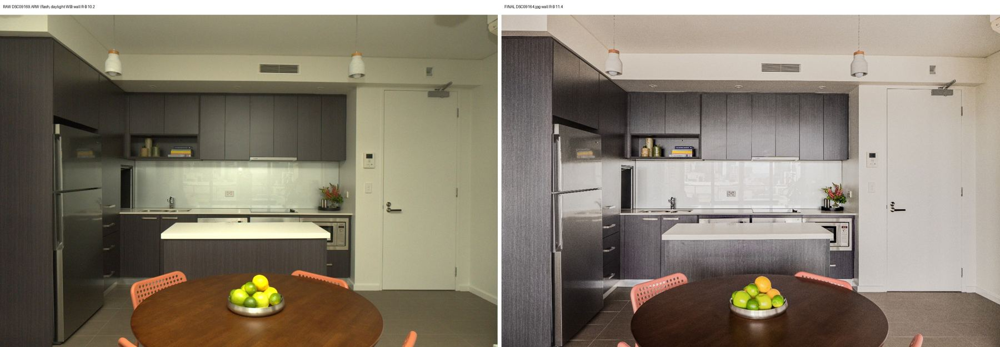
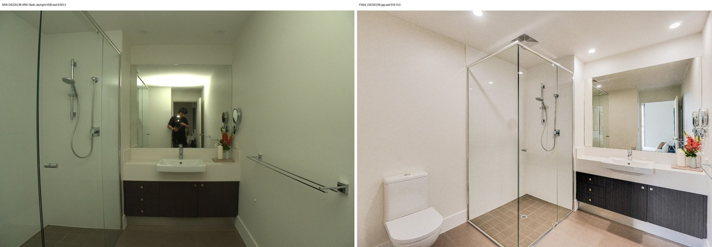
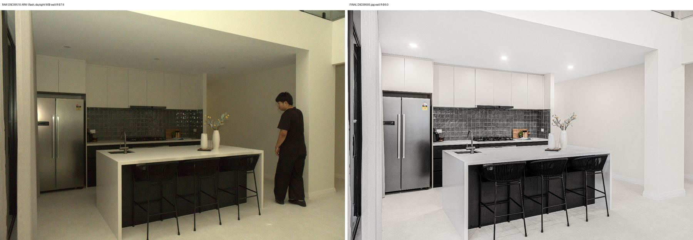
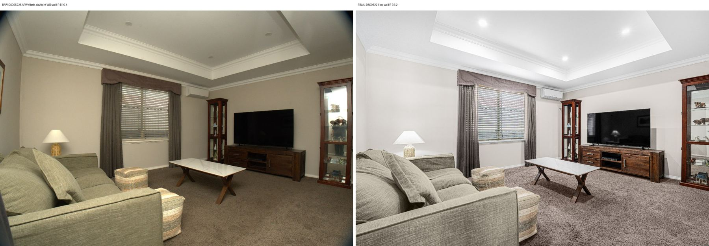

3 job(s) · 5 item(s) · Baker Production QC
Flash 1.6-3.7 stops under
Sony A6400 at ISO 400, f/8-ish, 1/160 flash frames. Brightest whites in the flash frames sat 1.6 to 3.7 stops below clipping (kitchen 3.7, bathroom 3.2, laundry 2.8). Aim for about 1 stop under. Two checked rooms (living 09153, gym 09325) had no flash frame.

Photographer in the bathroom mirror
The main bathroom group (DSC09238-09248) has the photographer reflected in the vanity mirror; the editor had to work around it. Shoot mirrors from an angle or step out of the line.

Flash 1.9-4.9 stops under
Flash frames were very dark: kitchen 4.9, dining 4.0, living 3.4, ensuite-side bedroom 3.3 stops under clipping. Raise flash power so whites land about 1 stop under.

Interiors shot into sunset - warm mixed light
Shoot started 5:45 pm, so many interiors were captured with low warm sun and sunset skies (bedroom raw wall R-B +16). The editor neutralised it well, but starting interiors earlier gives cleaner colour and leaves sunset for the twilight exteriors.
Flash 2.4-3.1 stops under
Sony A7 IV at ISO 640. Flash frames 2.4 (bedroom), 2.6 (bedroom 2) and 3.1 (lounge) stops below clipping; bathroom and kitchen groups had no flash frame. Turn the flash up and fire it in every room.
